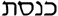

|
| A B C D E F G H I J K L M N O P Q R S T U V W X Y Z |
The place of assemblage of the Jews. This article will treat of the name, origin, history, organization, liturgy and building of the synagogue.
The Greek sunagogé, whence the Latin synagoga, French synagogue, and English synagogue, means a meeting, an assembly; and is used by the Septuagint to translate the Hebrew . The Aramaic translation is (cf. Arabic Kanîsah, a church) to which is akin the New Hebrew . The place of assemblage was termed in New Hebrew, ,  , meeting house, i.e., oikos sunagoges. In the course of time, the single word synagogue came to mean not only the meeting but the meeting-house, the teaching thereof and, in the broadest sense, the body politic of the Jews. This broad sense of the word synagogue is seen in John's use of ’aposunagogós , "excommunicated" or "put out of the synagogue" (cf. 9:22; 12:42; 16:2). Another Greek name for synagogue in use among Hellenistic Jews, is proseuké, shortened after the analogy of sunagogé, from oikos proseukos, house of prayer (cf. Philo, "In Flacc.", §§6, 7; "Ad Gaium", §§20, 23, 43). This phrase is in the Septuagint translation of Isaiah 56:7: "My house shall be called the house of prayer () for all nations." The Latinized proseucha of Juvenal (Sat., III, 296) means the Jewish house of prayer or synagogue. Josephus (Antiq., XVI, vi, 2) cites an edict of Augustus which calls the Synagogue sabbateíon, the Sabbath-house.
, meeting house, i.e., oikos sunagoges. In the course of time, the single word synagogue came to mean not only the meeting but the meeting-house, the teaching thereof and, in the broadest sense, the body politic of the Jews. This broad sense of the word synagogue is seen in John's use of ’aposunagogós , "excommunicated" or "put out of the synagogue" (cf. 9:22; 12:42; 16:2). Another Greek name for synagogue in use among Hellenistic Jews, is proseuké, shortened after the analogy of sunagogé, from oikos proseukos, house of prayer (cf. Philo, "In Flacc.", §§6, 7; "Ad Gaium", §§20, 23, 43). This phrase is in the Septuagint translation of Isaiah 56:7: "My house shall be called the house of prayer () for all nations." The Latinized proseucha of Juvenal (Sat., III, 296) means the Jewish house of prayer or synagogue. Josephus (Antiq., XVI, vi, 2) cites an edict of Augustus which calls the Synagogue sabbateíon, the Sabbath-house.
Obscurity enshrouds the first beginnings of the synagogue. The Jerusalem Talmud (in Ex., xviii, 20) dates it from the time of Moses; so, too, the tradition of the Alexandrian Jews, according to the witness of Philo, "De Vita Mosis" (III, 27) and Josephus, "Contra Apion." (II, 17). This rabbinical tradition is not reliable. It was probably during the Babylonian captivity that the synagogue became a national feature of Hebrew worship. Afar from their Temple, the exiled Jews gathered into local meeting-houses for public worship. Sacrifice was denied them; prayer in common was not. The longer their exile from the national altar of sacrifice, the greater became their need of houses of prayer; this need was met by an ever-increasing number of synagogues, scattered throughout the land of exile. From Babylonia this national system of synagogue worship was brought to Jerusalem. That the synagogue dates many generations earlier than Apostolic times, is clear from the authority of St. James: "For Moses of old time [’ek geneon ’archaíon] hath in every city them that preach him in the synagogues, where he is read every sabbath" (Acts 15:21).
From the outset of Christianity the synagogue was in full power of its various functions; the New Testament speaks thereof fifty-five times. The word is used to denote the body politic of the Jews twelve times: twice in Matthew (x, 17; xxiii, 34); once in Mark (13:9); three times in Luke's Gospel (viii, 41; xii, 11; xxi, 12), and four times in his Acts (vi, 9; ix, 2; xxii, 19; xxvi, 11); and twice in the Johannine writings (Revelation 2:9; 3:9). The more restricted meaning of meeting-house occurs forty-three times in the New Testament — seven in Matthew (iv, 23; vi, 2, 5; ix, 35; xii, 9; xiii, 54; xxiii, 6); seven times in Mark (1:21, 23, 29, 39; 3:1; 6:2; 12:39); twelve times in Luke's Gospel (iv, 15, 16, 20, 28, 33, 38, 44; vi, 6; vii, 5; xi, 43; xiii, 10; xx, 46), and fourteen times in his Acts (ix, 20; xiii, 5, 14, 42; xiv, 1; xv, 21; xvii, 1, 10, 17; xviii, 4, 7, 19, 26; xix, 8); twice in John (vi, 59; xviii, 20); once in James (ii, 2). Our Lord taught in the synagogues of Nazareth (Matthew 13:54; Mark 6:2; Luke 4:16), and Capharnaum (Mark 1:21; Luke 7:5; John 6:59). Saint Paul preached in the synagogues of Damascus (Acts 9:20), Salamina in Cyprus (Acts 13:5), Antioch in Pisidia (Acts 13:14), Iconium (xiv, 1), Philippi (xvi, 13), Thessalonica (xvii, 1), Boræa (xvii, 10), Athens (xvii, 17), Corinth (xviii, 4, 7), and Ephesus (xviii, 19). It is worthy of note that despite his frequent use of the Jewish meeting-house, St. Paul in his stern antagonism never once deigns to make mention of the synagogue. He designates Judaism by the term "circumcision", and not, as do the Evangelists, by the word "synagogue". And even in speaking of the Jews as "the circumcision", St. Paul avoids the received word peritomé, "a cutting around", a word employed by the Alexandrian Philo for Judaism and reserved by the Apostle for Christianity. The sworn foe of the "false circumcision" takes a current word katatomé, "a cutting down", and with the vigorous die of his fancy, stamps thereon an entirely new and exclusively Pauline meaning — the false circumcision of Judaism.
At the time of the destruction of Jerusalem (A.D. 70) there were in the city itself 394 synagogues, according to the Babylonian Talmud (Kethuth, 105a); 480, according to the Jerusalem Talmud (Megilla 73d). Besides these synagogues for the Palestinian Jews, each group of Hellenistic Jews in Jerusalem had its own synagogue — the Libertines, the Alexandrians, the Cyrenians, the Cilicians, etc. (Acts 6:9). Josephus speaks of the synagogue which Agrippa I erected in Dora (Antiq., XIX, vi, 3), of the Cæsarean synagogue which revolted against Rome (Bell. Jud., II, xiv, 4), of the great synagogue of Tiberias (Vita, 54), and of the synagogue of Antioch in Syria to which the sacred vessels were borne away in the time of the Seleucid War (Bell. Jud., VII, iii, 3). Philo is authority for the existence, during the first century A.D., of many synagogues in Alexandria (Leg. ad Gaium, 20), and of not a few in Rome (Ibid., 23). In Northern Galilee, are numerous ruins whose style of architecture and inscriptions are indications of synagogues of the second and, maybe, the first century A.D. The Franciscans are now engaged in the restoration of the ruined synagogue of Tel Hum, the site of ancient Capharnaum. This beautiful and colossal synagogue was probably the one in which Jesus taught (Luke 7:5). Of the ruined synagogues of Galilee, that of Kefr Bir'im is the most perfectly preserved. Various Greek inscriptions, recently discovered in Lower Egypt, tell of synagogues built there in the days of the Ptolemies. A marble slab, unearthed in 1902 some twelve miles from Alexandria, reads: "In honour of King Ptolemy and Queen Berenice, his sister and wife, and their children, the Jews (dedicate) this proseuché. Both the Jerusalem and the Babylonian Talmud make mention of numerous Galilean synagogues which were centres of rabbinical literary, and religious and political influence at Sepphoris, Tiberias, Scythopolis, etc. Every Jewish settlement was obliged by Talmudic law to have its synagogue; the members of the community could oblige one another to the building and maintaining thereof; indeed the members of the Jewish community were designated "sons of the synagogue". For further history of the synagogue, see JEWS AND JUDAISM.
The Great Synagogue is worthy of special mention, as to it is assigned, by Jewish tradition, the important rôle of forming the Canon of the Old Testament. It is said to have been founded by Esdras in the middle of the fifth century B.C., and to have been a permanent and legislative assemblage for two and a half centuries. The Mishnah (Pirke Aboth, I, 1) claims that the Prophets handed down the Torah to the men of the Great Synagogue. "Aboth Rabbi Nathan" (a post-Talmudic treatise) paraphrases this statement by including the last three Prophets in this assemblage: "Aggeus, Zacharias and Malachias received [the Torah] from the Prophets; and the men of the Great Synagogue received from Aggeus, Zacharias and Malachias". How long this supposedly authoritative body held control of the religion of Israel, it is impossible to tell. Jewish chronology from the Exile to Alexander's conquest is far from clear. Rabbi Jeremiah (Jerus. Talmud, Berakot, 4d) says that one hundred and twenty elders made dictions of Kiddush and habdalah. The Talmud, on the contrary (Peah, II, 6), hands down Torah from the Prophets to the Zugoth (Pairs) without the intervention of the Great Synagogue. Be the Great Synagogue of Jewish tradition what it may, historical criticism has ruled it out of court. Kuenen, in his epoch-making monograph "Over die Mannen der groote synagoge" (Amsterdam, 1876), shows that a single meeting came to be looked upon as a permanent institution. The Levites and people met once and only once, probably on the occasion of the covenant described by Nehemias (Nehemiah 8-10), and the important assemblage became the nucleus round which were wrapped the fables of later Jewish tradition. Such is the conclusion of W. R. Smith, "The Old Testament in the Jewish Church", p. 169; Ryle, "Canon of the Old Testament", p ú Buhl, "Canon and Text of the Old Testament", p. 33; Driver, "Introduction to the Literature of the Old Testament", 6th ed., p. 7.
The "sons of the synagogue" were governed by a council called bêth dîn, "house of justice"; or sunédrion "council" (transliterated , Sanhedrin); or boulé, "council". The members of this council were twenty-three in larger towns, seven in smaller; and were called ’árchontes, "rulers" (Matthew 9:18, 23); Luke 8:41), or presbúteroi, "ancients" (Luke 7:3). The "rulers of the synagogue" had it in their power to punish by excommunication, scourging and death. (a) Excommunication from the synagogal community was termed herem, , ’anáthema, (see ANATHEMA). Both the Hebrew and Greek words mean that an object is "sacred" or "accursed" (cf. Arabic hárîm, the harem, a precinct sacred to the women of a household or the mosque of a community). (b) Scourging (, cf. Makkoth, III, 12; mastigón, cf. Matthew 10:17; 23:34; déro,, cf. Mark 13:9; Acts 22:19) was thirty-nine stripes (Makkoth, III, 10; 2 Corinthians 11:24) laid on by the "servant of the synagogue", hazzan, ‘uperétes, for minor offences. Three elders made up a tribunal competent to inflict the penalty of scourging. It is likely by this lesser tribunal that Our Lord refers: "Whosoever is angry with his brother shall be in danger of the judgment", ’énochos ’éstai te krísei (Matthew 5:22). (c) The death penalty was inflicted by the Sanhedrin in full session of twenty-three elders (cf. Sanhedrin I, 4). To this penalty or to that of excommunication should probably be referred Our Lord's words: "And whosoever shall say to his brother, Raca, shall be in danger of the council", ’énochos ’éstai to sunedrío (Matthew 5:22).
The "ruler of the synagogue", (Mark 5:22, 35, 36,, 38; Luke 8:49; 13:14; Acts 13:15; 18:8, 17), rôsh hákkeneséth (Sota, VII, 7) presided over the synagogue and its services. This presidency did not prevent the "sons of the synagogue" from freely officiating. Witness the freedom with which Our Lord and St. Paul stood up to explain the Scriptures in the various synagogues of Palestine and the Diaspora. The hazzan, "servant", handed the scrolls to the readers and taught the children.
There were five parts in the synagogue service:
(1) The Shema’ is made up of Deuteronomy 6:4-9; 11:13-21; Numbers 15:37-41 — two opening blessings for morning and evening, one closing blessing for morning and two for evening. These benedictions are named Shema‘ from the opening word, the imperative : "Hear, O Israel; Jahweh our God is one Jahweh". The origin of the Shema‘, as of other portions of Jewish liturgy, is unknown. It seems undoubtedly to be pre-Christian. For it ordains the wearing of the phylacteries or frontlets — prayer-bands borne upon the arm and between the eyes — during the recitation of the great commandment of the love of God (cf. Deuteronomy 6:8; 11:18). These phylacteries (phulaktéria) are called in the Talmud, "the prayer which is for the hand", , and "the prayer which is for the head", . The wearing of the two bands was in vogue in Christian times (Matthew 23:5; Josephus, "Antiquit.", IV, 8:13).
(2) The Prayer is called "the eighteenth", Shemónéh ‘esréh ), because of its eighteen benedictions and petitions. There are two recensions — the Babylonian, which is commonly in use, and the Palestinian, which Schechter recently discovered in a Cairo genizah (manuscripts-box). Dalman (Worte Jesu, p. 304) considers that petitions 7, 10-14, are later than the destruction of Jerusalem (A.D. 70). The twelfth petition of the Palestinian recension shows that the Christians were mentioned in this daily prayer of the synagogue:
"May the Christians and heretics perish in a moment;
May they be blotted out of the book of life;
May they not be written with the just."
The Babylonian recension omits , Christians. The Lord's prayer is made up, in like manner, out of petitions and praises, but in a very unlike and un-Jewish spirit of love of enemies.
(3) Torah. The Jerusalem Talmud (Megilla, 75a) tells us that the reading of the Law on sabbaths, feast-days, new moons, and half feast-days is of Mosaic institution; and that Esdras inaugurated the reading of Torah on Mondays, Thursdays, and Saturdays. This Talmudic tradition, though not very reliable, points to a very ancient custom. The law is divided into fifty-four sections, sedarîm, which make up a pericopic sabbath reading of the Pentateuch. Special readings are assigned for special sabbaths; seven readers are called upon at random, and each reads his share.
(4) The Prophets. Parallel to the pericopic reading of Torah is a pericopic reading from the Prophets, or second part of the Hebrew Canon. These sections are chosen with a view to exemplify or drive home the lesson from the Law which precedes. The name of the section from the Prophets, haphtara (from Hiph‘il of , "to dismiss"), indicates that at first the synagogue service here came to a close.
(5) The Scripture Lesson. Even by the time of Christ, the exposition of Scripture was part of the synagogal liturgy (Matthew 4:23; Mark 1:21; 6:2). Any of the brethren might be called upon to give the "word of exhortation" (Acts 13:15). The Talmudic statute (Megilla, IV, 4) was that the methúrgeman, interpreter, paraphrase the section from Torah one verse at a time and the section from the Prophets one to three verses at a time. These paraphrases are called tárgûmîm; a lengthy exposition of a section is a midrash. There was formerly an antiphonal chanting of one or other of Psalms cv-cvii, cxi-cxix, cxvi-cxviii, cxxv, cxxxvi, cxxxxvi-cl. The precentor chanted verse after verse and the choir repeated the first verse of the psalm. At the end he chanted the doxology and called upon the people to answer "Amen", which they did.
In Palestine, the synagogues were built within the city. In the Diaspora, a site was generally chosen outside the city gate and either by the seaside or river-side (Acts 16:13). The Tosephta (Megilla, IV, 22) ordains that the synagogue be in the highest place of the city and face to the east. The ruins of Galilean synagogues show no observance of this ordinance.
There seems to have been no established style of synagogal architecture. Until recent years, the synagogue has been built in whatsoever style had vogue in the place and at the time of building. The ruined synagogue of Merom is in severe Doric. That of Kafr Bir’im is in a Græco-Roman modification of Corinthian. The building is quadrangular in form. On the main façade there are three doorways, each of which has a highly ornamented architrave; above the centre doorway is a carefully carved Roman arch. Later on, Russian synagogues were built in decidedly Russian style. In Strasburg, Munich, Cassel, Hanover, and elsewhere the synagogues show the influence of the different styles of the churches of those cities. The cruciform plan is naturally not followed; the transepts are omitted. Synagogues of Padua, Venice, Livorno and other Italian cities are in the Renaissance style. Since the expulsion of the Jews from Spain, Moorish forms have gradually come to be considered the distinctive trait of synagogal architecture. El Transito and Santa Maria la Blanca, both in Toledo, are two of the finest examples of this Moorish architecture under Jewish influence.
The Ark, arôn tébah, containing the sacred scrolls, stood at the eastern end opposite the entrance to the rectangular building. In the center was a raised platform (bema, ), and thereupon the lectern (’analogion, ). This elevated platform is also called "Almenar", a word corrupted from the Arabic Al-minbar, the "chair", the "pulpit". These two furnishings are the most essential interior settings of the synagogue. The Ark was originally but a niche in the wall. In time, as the most dignified feature, it received most concern in the decorative scheme. Nowadays, it is raised on high, approached by three or more steps and covered by an elaborately embellished canopy. The Almenar, too, has undergone various embellishments. It is approached by steps, sometimes has seats, is railed in and at times surrounded by a grille, round about or on both sides of it, are the seats for the congregation (klintér, ). The first seats, protokathedría (cf. Matthew 23:6; Mark 12:39; Luke 11:43 and 20:46) are those nearest the Ark; they are reserved for those who are highest in rank (cf. Tosephta, Megilla, IV, 21). Women, at least since the Middle Ages, sit in galleries to which they enter by stairways from the outside. These galleries were formerly set very high; but now are low enough to show both the Ark and the Almemar.
SCHÜRER, Gesch., II (3rd ed., Leipzig, 1873), 427-64, tr. (Edinburgh, 1885-87); GRÄTZ, Gesch., IV-XI (Leipzig, 1863-88); ZUNZ, Gottesdienstliche Vorträge der Juden (Berlin, 1832); DALMAN, Synagogaler Gottesdienst, in HERZOG's Real- Encyklopädie; ABRAHAMS, Jewish Life in the Middle Ages (London, 1896); LÖW, Der Synagogale Ritus in Monatschrift, 1884, IV, 1-71; KOHLER, Ueber die Ursprüngs u. Grundformen der synagogalen Liturgie in Monatschrift, 1893, XXXVII, 441-51.
APA citation. (1912). Synagogue. In The Catholic Encyclopedia. New York: Robert Appleton Company. Retrieved April 26, 2010 from New Advent: http://www.newadvent.org/cathen/14379b.htm
MLA citation. "Synagogue." The Catholic Encyclopedia. Vol. 14. New York: Robert Appleton Company, 1912. 26 Apr. 2010 <http://www.newadvent.org/cathen/14379b.htm>.
Transcription. This article was transcribed for New Advent by WGKofron. In memory of Fr. John Hilkert, Akron, Ohio. Fidelis servus et prudens, quem constituit Dominus super familiam suam.
Ecclesiastical approbation. Nihil Obstat. July 1, 1912. Remy Lafort, S.T.D., Censor. Imprimatur. +John Cardinal Farley, Archbishop of New York.
Contact information. The editor of New Advent is Kevin Knight. My email address is webmaster at newadvent.org. (To help fight spam, this address might change occasionally.) Regrettably, I can't reply to every letter, but I greatly appreciate your feedback — especially notifications about typographical errors and inappropriate ads.